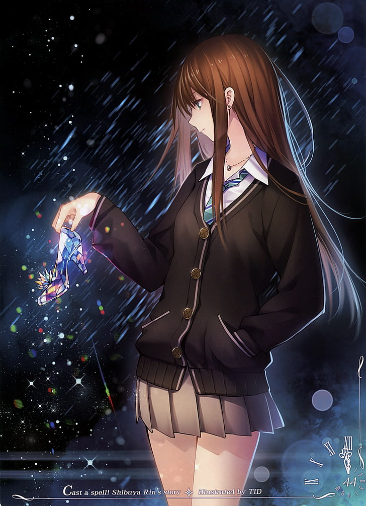

1 < 6 > 5 & ♠
♥
Chicken:
wgtywfwf
STrtrstttwrwrstwrstrs
tyuop I Like H20
The chicken (Gallus gallus domesticus) is a domesticated subspecies of the red junglefowl originally from Southeastern Asia.
Rooster or cock is a term domesticated for an adult male bird, and a younger male may be called a cockerel. A male that has been castrated is a capon. An adult female bird is called a hen and a sexually immature female is called a pullet. Originally raised for cockfighting or for special ceremonies, chickens were not kept for food until the Hellenistic period (4th–2nd centuries BC).[1][2] Humans now keep chickens primarily as a source of food (consuming both their meat and eggs) and as pets.
Terminology
An adult male is a called a 'cock' or 'rooster' (in the United States) and an adult female is called a 'hen'.
COOLOOLOLOLOLOLOLOL
Breeds of chickens
- Silkie
- Polish
- Easter Eggered
- Rhode Island Reds
- Bantem
- Silkie
- Polish
- Standards
- Easter Eggered
- Rhode Island Reds